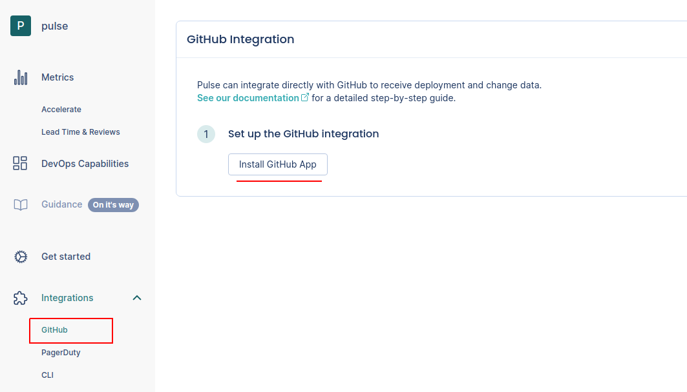
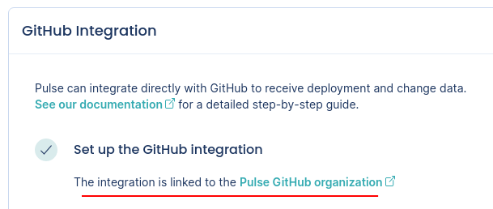

One-click integrations¶
Pulse is developing "one-click integrations" for the most popular Git providers, CI/CD platforms, and incident management tools. These integrations simplify the process of setting up your workflows to send data to Pulse.
GitHub¶
Pulse integrates directly with GitHub to receive data about changes and deployments, necessary to calculate the metrics:
-
Lead time for changes, including the following drill-down metrics:
Setting up the GitHub integration¶
To set up the GitHub integration:
-
On Pulse, expand Integrations and select GitHub.
-
Click Install GitHub App and follow the instructions on the GitHub UI to install the app on your organization.
Important
You can only install the Pulse GitHub App on an organization and not on your personal account.

-
Wait until you get a confirmation that Pulse successfully created the integration and the webhook on GitHub.

If there was an error please contact support.
Configuring how Pulse detects deployments¶
The Pulse GitHub integration supports two strategies to detect and measure deployments in your repositories:
-
Pull requests merged to default branch (default strategy)
- Pulse considers a deployment every pull request that targets the default branch of the repository.
- The deployment date is the timestamp when the corresponding pull request is merged.
- The set of changes in a deployment is the list of commits in the corresponding pull request. Pulse correctly tracks your changes even if you squash the commits when merging the pull request.
-
Git tags following the SemVer specification
-
Pulse considers a deployment every Git tag that follows the SemVer convention, excluding pre-release versions but allowing release prefixes. For exmple, the following are valid tags:
1.0.0,v2.3.4.To use this strategy, make sure that you're creating Git tags on your repositories for each successful deployment to production, or whenever you make a new release available to any user of your application:
git tag -a MAJOR.MINOR.PATCH -m "<Deployment or release message>"Where
MAJOR.MINOR.PATCHmust be a valid SemVer version without pre-release information. -
The deployment date is either the creation date of annotated tags or the timestamp when Pulse receives the webhook calls for lightweight tags.
Keep in mind that since webhook calls can be delayed, the deployment date on Pulse could be imprecise and impact the metric Lead time for changes.
-
The set of changes that belong to a deployment is the list of commits between the tag of that deployment and the previous tag. Because of this, Pulse discards:
- The first SemVer tag in the repository since there is no previous tag to compare with.
- Any tag that does not have a common ancestor (commit) with its previous tag, since Pulse cannot obtain the changes between them.
-
To configure the strategy that Pulse uses to detect deployments:
-
On Pulse, expand Integrations and select GitHub.
Make sure that you have already installed the GitHub App.
-
Choose the strategy that fits best your workflows.

PagerDuty¶
Pulse integrates directly with PagerDuty to receive data about incidents, necessary to calculate the metrics Median time to recover and Change failure rate.
To set up the PagerDuty integration:
-
On Pulse, expand Integrations and select PagerDuty.

-
Fill in the necessary details:
- PagerDuty subdomain: Your custom PagerDuty subdomain. For example,
mysubdomainif you use the URLhttps://mysubdomain.pagerduty.comto access PagerDuty. - Pulse system name: Name of the system to associate with the incidents reported by this integration.
- PagerDuty subdomain: Your custom PagerDuty subdomain. For example,
-
Follow the instructions on the Pulse UI to create a new webhook on PagerDuty using the provided URL. For example: